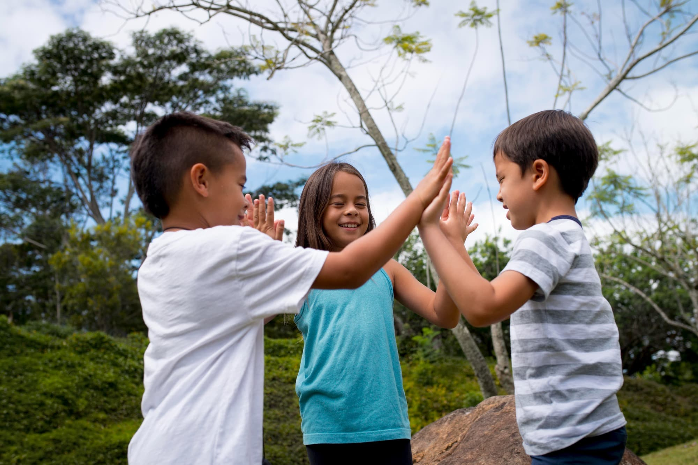
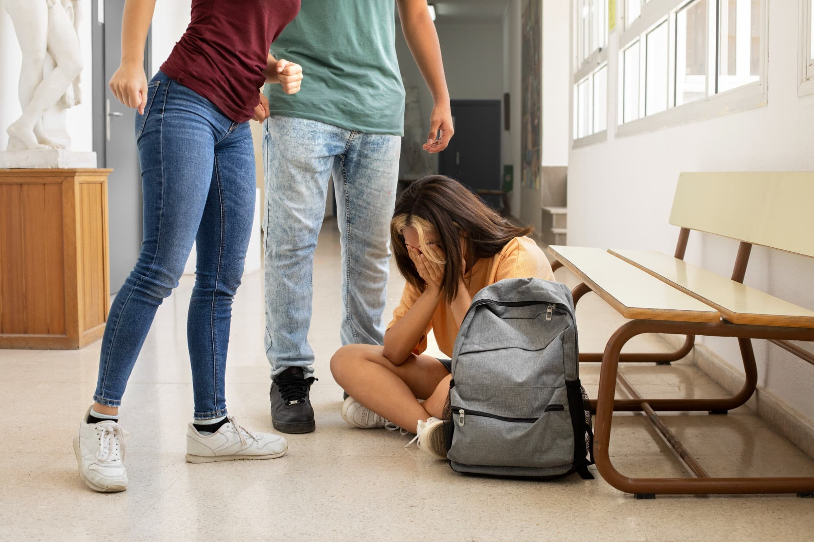
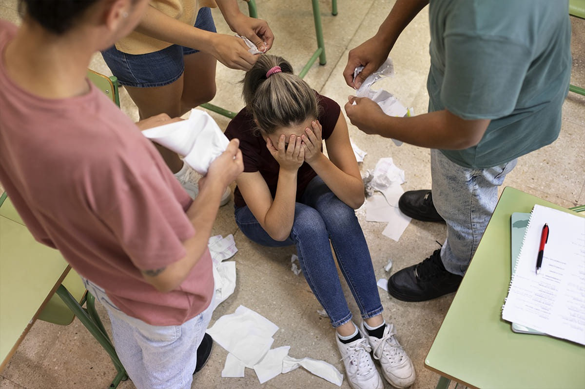
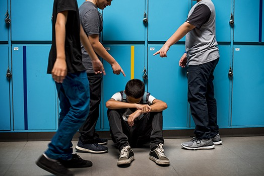
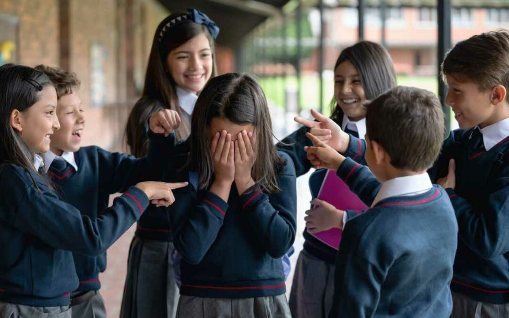

PLAN DE INTERVENCIÓN
"RECREOS SEGUROS Y SALUDABLES"
I. DATOS GENERALES:
- 1.1 DREC: Callao
- 1.2 Institución Educativa: 5076 "Nuestra Señora de las Mercedes"
- 1.3 Nivel Educativo: Primaria - Secundaria
- 1.4 Directora: María Magdalena Panéz Luciano
- 1.5 Subdirectoras de Primaria:
- Miriam Arias Almeida
- Milady Guevara Álvarez
- Maruja Chihuala Ponte
- 1.6 Subdirectores(as) de Secundaria:
- Lidia Díaz Saavedra
- Nery Huamán Vargas
- Pascual Aguilar Estrada
- 1.7 Coordinadora: Catherine Meza Coronado
- 1.8 Turnos: Mañana - Tarde


II. FUNDAMENTACIÓN:
En el marco de los 5 compromisos de gestión educativa y de conformidad a la Ley General de Educación N°28044,
su reglamento D.S. N°013-2004-ED, DS. N°025-2001-ED y demás normas complementarias en concordancia con
los lineamientos de política educativa peruana, y específicamente en el Compromiso de Gestión 5, se establece,
que la gestión del bienestar escolar genera acciones y espacios para el acompañamiento socioafectivo y cognitivo,
a través de la tutoría individual y grupal, del trabajo con familias y la comunidad y de la orientación educativa permanente.
Asimismo, se promueve una convivencia escolar democrática donde se ejercen los derechos humanos con responsabilidad,
promoviendo el bien común y las relaciones positivas entre toda la comunidad educativa, sin violencia ni discriminación,
en escuelas seguras, inclusivas, con igualdad de género y basadas en un diálogo intercultural.
Que la competencia 3, del Marco del Buen Desempeño Docente, indica que el docente: “Crea un clima propicio para el aprendizaje,
la convivencia democrática y la vivencia de la diversidad en todas sus expresiones con miras a formar ciudadanos críticos e interculturales”.
Construyendo, de manera asertiva y empática, relaciones interpersonales con y entre todos los estudiantes, basadas en el afecto,
la justicia, la confianza, el respeto mutuo y la colaboración.
Promoviendo un ambiente acogedor de la diversidad, en el que esta se exprese y sea valorada como fortaleza y oportunidad
para el logro de aprendizajes. Generando relaciones de respeto, cooperación y soporte de los estudiantes con necesidades educativas especiales.
En el cual, estamos fomentando en la Institución Educativa 5076 “Nuestra Señora de las Mercedes”, con el presente plan “Recreos seguros”.
Se cuenta, también con la acción Tutorial que tiene un carácter formativo-preventivo y atiende situaciones de vulneración de derechos que afectan
a los estudiantes, para lograr una educación integral en nuestros estudiantes, contándose con toda la comunidad educativa como parte de estas acciones,
para lograr los objetivos del presente plan. Siendo el equipo directivo quien garantiza que los docentes sean responsables de realizar las labores
de orientación, formación y acompañamiento a los estudiantes.
III. METAS:
NIVEL
TURNO
N° DE
SECCIONES
N° DE
ESTUDIANTES
TOTAL
PRIMARIA
Mañana
22
594
1181
Tarde
23
587
SECUNDARIA
Mañana
16
533
1130
Tarde
16
497
IV. OBJETIVOS:
Objetivo General:
Fomentar en los niños y niñas de la Institución Educativa vivir en una
convivencia sana, donde en los recreos de la I.E se sientan libres de realizar sus
actividades de esparcimiento sin afectar la buena convivencia entre estudiantes.
Objetivos específicos:
- Atender las necesidades de los estudiantes en el momento preciso.
- Establecer un clima de confianza y relaciones horizontales entre los diversos
tutores y los demás estudiantes, para que se den las condiciones favorables en
el que el estudiante se sienta seguro durante el recreo.
- Generar en la institución educativa durante las horas de recreos un ambiente
óptimo entre los estudiantes, con relaciones interpersonales, caracterizadas por
la confianza, el afecto y el respeto que permitan la sana convivencia.
Nadie te puede hacer sentir inferior sin tu consentimiento.
Al escribir la historia de tu vida, no dejes que nadie más sostenga el lápiz.

V. BASES LEGALES:
- Constitución Política del Perú.
- Ley N°28044. Ley General de Educación.
- Ley N°29994. Ley de Reforma Magisterial.
- Ley N°27337. Ley que aprueba el nuevo Código de los niños y adolescentes.
- Ley N°29719. Ley que promueve la convivencia sin violencia en las Instituciones Educativas.
- Ley N°29600. Ley que fomenta la reinserción escolar por embarazo.
- Ley N°28983. Ley de igualdad de oportunidades entre mujeres y hombres.
- Ley N°29973. Ley General de la Persona con Discapacidad.
- Ley N°30364. Ley para prevenir, sancionar y erradicar la violencia contra las mujeres y los integrantes del grupo familiar.
- RVM N°004-2007-ED. Directiva que norma la campaña educativa nacional permanente de sensibilización y promoción para una vida sin drogas.
- D.S. N°010-2012-ED. Reglamento de la Ley 29719, Ley que promueve la convivencia sin violencia en las Instituciones Educativas.
- D.S. N°011-2012-ED. Que aprueba el reglamento de la Ley General de Educación.
- D.S. N°004-2013-ED. Que aprueba el reglamento de la Ley de Reforma Magisterial.
- RM N°519-2013-ED. Lineamientos para la prevención y protección de las y los estudiantes contra la violencia ejercida por el personal de las Instituciones Educativas.
- D.S. N°002-2014-MIMP. Reglamento de la Ley N°29973, Ley General de la persona con discapacidad.
- RM N°281-2016-MINEDU. Aprueba el “Currículo Nacional de Educación Básica” y sus modificatorias.
- RM N°649-2016-MINEDU. Aprueba el Programa Curricular de Educación Inicial, el Programa Curricular de Educación Primaria y el Programa Curricular de Educación Secundaria.
- DS N°004-2018-MINEDU, que aprobó los “Lineamientos para la Gestión de la Convivencia Escolar, la Prevención y la Atención de la Violencia Contra Niñas, Niños y Adolescentes”.
- RVM N°212-2020-MINEDU “Lineamientos de Tutoría y Orientación Educativa para la Educación Básica”.
- RVM N°094 -2020 “Norma que regula la Evaluación de las Competencias de los Estudiantes de la Educación Básica”.
- RM N°274-2020-MINEDU, que aprobó la actualización del "Anexo 03: Protocolos para la atención de la violencia contra niñas, niños y adolescentes”.
- RM N°189-2021-MINEDU. “Disposiciones para los Comités de Gestión Escolar en las Instituciones educativas públicas de Educación Básica”.
- R.V.M. N°169-2021-MINEDU. “Lineamientos de educación sexual integral para la educación básica”.
- D.S. N°007-2021-MINEDU. Modifica el Reglamento de la Ley N°28044.
- R.M. N°0108-2022-MINEDU. “Lineamientos para la implementación de la estrategia juego, aprendo y me siento saludable”.
- R.M. N°556-2024-MINEDU. “Norma Técnica para el Año Escolar en las instituciones y programas educativos públicos y privados de la Educación Básica para el año 2025”.
- RI de la I.E. N°5076 “Nuestra Señora de las Mercedes”.
VI. CRONOGRAMA DE ACTIVIDADES:
N°
ACTIVIDADES
RESPONSABLES
M
A
M
J
J
A
S
O
N
D
1
Elaboración del Plan de Recreo Seguro
Comité de Bienestar
x
2
Presentación del plan de recreo seguro por mesa de partes
Coordinadora de TOE-CE
x
3
Comunicación de las medidas mediante memorando
Dirección
x
4
Compartir información sobre las medidas tomadas a los estudiantes
Auxiliares de educación
x x x x x
5
Ser mediador con conocimientos de causa en posibles conflictos entre estudiantes
Directivos y coordinación de TOE-CE
x x x x x x x x x
6
Coordinación y ejecución de actividades preventivas en recreo y durante clases
Comité de Bienestar
x x x x x x x x x
7
Charlas preventivas que se realizarán en horas de tutoría
Comité de Bienestar
x x x x x x x x x
8
Asambleas estudiantiles sobre la problemática “Violencia Escolar”
Municipio Escolar
x x x

VII. ESTRATEGIAS Y CHARLAS PREVENTIVAS A DESARROLLAR:
N°
ACTIVIDADES
PARTICIPANTES
1
Vigilancia de lugares estratégicos por parte de la comunidad educativa (personal de servicio en baños, administrativos en pasadizos, directivos y docentes en patios y canchas deportivas).
Directivos
Administrativos
Personal de servicio
Docentes
2
Identificar y derivar a psicología a los/las estudiantes que presenten problemas de conducta para evitar situaciones de riesgo.
Directivos
Auxiliares de educación
Docentes tutores
Coordinación de TOE-CE
3
Realizar seguimiento a estudiantes que reciben atención psicológica.
Directivos
Docentes tutores
Coordinación de TOE-CE
4
Desarrollo de sesiones en Tutoría y charla a padres de familia sobre “Gestión de Conflictos y Convivencia Pacífica”, tema transversal en las demás áreas.
Docentes
Tutores
Padres de familia
5
Charlas psicológicas preventivas sobre el control de emociones en aulas de primaria y secundaria durante horas de tutoría.
Psicólogo Víctor Fuentes
6
Charlas preventivas sobre “Resolución de conflictos” por parte de la Posta de Salud de Márquez a aulas focalizadas (primer y segundo grado).
Psicólogas de la Posta
7
Charlas preventivas por parte de la Comisaría de Márquez a aulas focalizadas (primer grado).
Comisaría de Márquez
8
Charlas preventivas sobre seguridad y convivencia por parte de la Comisaría de Márquez (segundo grupo focalizado).
Comisaría de Márquez
9
Asambleas estudiantiles sobre “Violencia Escolar” con los Consejos de Aula.
Municipio Escolar

VIII. HORARIO DE RECREO:
NIVELES
TURNO
HORARIO
PRIMARIA
Mañana
9:45 - 10:15
Tarde
3:30 - 4:00
SECUNDARIA
Mañana
10:30 - 10:45
Tarde
4:15 - 4:30
IX. EVALUACIÓN:
Se tomarán en cuenta los logros y dificultades, así como las medidas correctivas y sugerencias relacionadas con una buena convivencia escolar durante el recreo. La evaluación se realizará de manera permanente.
X. MATERIALES:
Materiales varios: silbatos, juegos, etc.
XI. RECURSOS HUMANOS:
- Directivos
- Coordinadora de TOE-CE
- Personal administrativo
- Personal de servicio
- Docentes
- Estudiantes
- Auxiliares de educación
Márquez, 09 de abril del 2025